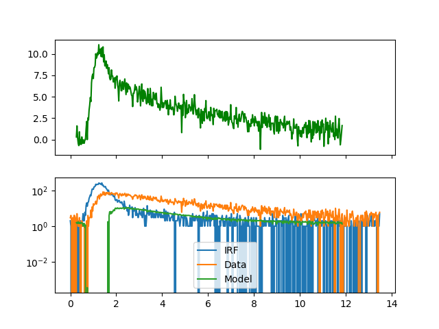

Note
Click here to download the full example code
Fluorescence decay analysis - 1¶
Introduction¶
In time-resolved fluorescence experiments the fluorescence intensity decay of a
sample is monitored. To date this is mostly accomplished by repeatedly exciting
the sample by a short laser pulse and recording the time between the sample excitation
and the detection of photons. In such pulsed experiments the micro time in a TTTR
object encodes the time between the excitation pulse and the detection of the photon.
In analogue counting electronics is mostly operated in an inverse mode where the
time between the photon and the subsequent detection pulse is recorded. After multiple
photons have been recorded fluorescence decay histograms are computed. The shape
of these histograms corresponds to the underlying fluorescence decay, f(t).
In many cases fluorescence decays can be described by linear combinations of
exponential decays. The Decay class of tttrlib computes models for fluorescence
decays, f(t), fluorescence intensity decay histograms, h(t), and to scores models
against experimental decay histograms. The Decay class handles typical artifacts
encountered in fluorescence decays such as scattered light, constant backgrounds,
convolutions with the instrument response function [OConnor12],
pile-up artifacts [Coa68], differential non-linearity of the
micro time channels [Bec05] and more.
Below the basic usage of the Decay class is outlined with a few application
examples. These examples can be used as starting point for custom analysis pipelines,
e.g. for burst-wise single-molecule analysis, pixel-wise FLIM analysis or analysis
over larger ensembles of molecules or pixels.
Decay histograms¶
Decay class¶
Fluorescence decays can be either computed using the static method provided by the
Decay class or
Create an instance the Decay class
Single-molecule
import matplotlib.pylab as plt
import scipy.optimize
import scipy.stats
import numpy as np
import tttrlib
import fit2x
def objective_function_chi2(
x: np.ndarray,
decay_object: fit2x.Decay,
x_min: int = 20,
x_max: int = 150
):
scatter, background, time_shift, irf_background = x[0:4]
lifetime_spectrum = x[4:]
decay_object.set_lifetime_spectrum(lifetime_spectrum)
decay_object.irf_background_counts = irf_background
decay_object.scatter_fraction = scatter
decay_object.constant_offset = background
decay_object.irf_shift = time_shift
# wres = decay_object.get_weighted_residuals()
# return np.sum(wres[x_min:x_max]**2)
return decay_object.get_score(x_min, x_max)
def objective_function_mle(
x: np.ndarray,
x0: np.ndarray,
decay_object: fit2x.Decay,
x_min: int = 20,
x_max: int = 500,
use_amplitude_prior: bool = True,
use_initial_prior: bool = True,
amplitude_bias: float = 5.0,
initial_sd: float = 5.0,
verbose: bool = False
):
scatter, background, time_shift, irf_background = x[0:4]
lifetime_spectrum = np.abs(x[4:])
decay_object.set_lifetime_spectrum(lifetime_spectrum)
decay_object.irf_background_counts = irf_background
decay_object.scatter_fraction = scatter
decay_object.constant_offset = background
decay_object.irf_shift = time_shift
chi2_mle = decay_object.get_score(x_min, x_max, score_type="poisson")
# d = decay_object.get_data()[x_min:x_max]
# m = decay_object.get_model()[x_min:x_max]
# return np.sum((m - d) - d * np.log(m/d))
ap = 0.0
if use_amplitude_prior:
p = lifetime_spectrum[::2]
a = np.ones_like(p) + amplitude_bias
ap = scipy.stats.dirichlet.logpdf(p / np.sum(p), a)
chi2_mle += ap
ip = 0.0
if use_initial_prior:
ip = -np.sum(np.log(1./((1+((x - x0) / initial_sd)**2.0))))
chi2_mle += ip
if verbose:
print("Total log prob: %s" % chi2_mle)
print("Parameter log prior: %s" % ip)
print("Dirichlet amplitude log pdf: %s" % ap)
print("---")
return chi2_mle
Prepare data¶
# load file
spc132_filename = '../../test/data/bh_spc132_sm_dna/m000.spc'
data = tttrlib.TTTR(spc132_filename, 'SPC-130')
ch0_indeces = data.get_selection_by_channel([0, 8])
data_ch0 = data[ch0_indeces]
n_bins = 512
# selection from tttr object
cr_selection = data_ch0.get_selection_by_count_rate(
time_window=6.0, n_ph_max=7
)
low_count_selection = data_ch0[cr_selection]
# create histogram for IRF
irf, _ = np.histogram(low_count_selection.micro_times, bins=n_bins)
# Select high count regions
# equivalent selection using selection function
cr_selection = tttrlib.selection_by_count_rate(
data_ch0.macro_times,
0.100, n_ph_max=5,
macro_time_calibration=data.header.macro_time_resolution / 1e6,
invert=True
)
high_count_selection = data_ch0[cr_selection]
data_decay, _ = np.histogram(high_count_selection.micro_times, bins=n_bins)
time_axis = np.arange(0, n_bins) * data.header.micro_time_resolution * 4096 / n_bins
Make decay object¶
decay_object = fit2x.Decay(
data=data_decay.astype(np.float64),
irf_histogram=irf.astype(np.float64),
time_axis=time_axis,
excitation_period=data.header.macro_time_resolution,
lifetime_spectrum=[1., 1.2, 1., 3.5]
)
decay_object.evaluate()
# A minimum number of photons should be in each channel
# as no MLE is used and Gaussian distributed errors are assumed
sel = np.where(data_decay > 1)[0]
x_min = 10 #int(min(sel))
# The BH card are not linear at the end of the TAC. Thus
# fit not the full range
x_max = 450 #max(sel)
# Set some initial values for the fit
scatter = [0.05]
background = [2.01]
time_shift = [2]
irf_background = [5]
lifetime_spectrum = [0.5, 0.5, 0.5, 3.5]
Optimize #¶
x0 = np.hstack(
[
scatter,
background,
time_shift,
irf_background,
lifetime_spectrum
]
)
fit = scipy.optimize.minimize(
objective_function_mle, x0,
args=(x0, decay_object, x_min, x_max, False, False)
)
fit_mle = fit.x
x0 = np.hstack([scatter, background, time_shift, irf_background, lifetime_spectrum])
fit = scipy.optimize.minimize(
objective_function_mle, x0,
args=(x0, decay_object, x_min, x_max)
)
fit_map = fit.x
Out:
/home/travis/miniconda/envs/docs_env/lib/python3.7/site-packages/scipy/optimize/optimize.py:697: RuntimeWarning: invalid value encountered in double_scalars
df = (f(*((xk + d,) + args)) - f0) / d[k]
Plot #¶
fig, ax = plt.subplots(nrows=2, ncols=1, sharex=True, sharey=False)
ax[1].semilogy(time_axis, irf, label="IRF")
ax[1].semilogy(time_axis, data_decay, label="Data")
ax[1].semilogy(
time_axis[x_min:x_max],
decay_object.model[x_min:x_max], label="Model"
)
ax[1].legend()
ax[0].plot(
time_axis[x_min:x_max],
decay_object.weighted_residuals[x_min:x_max],
label='w.res.',
color='green'
)
plt.show()

Total running time of the script: ( 0 minutes 0.374 seconds)